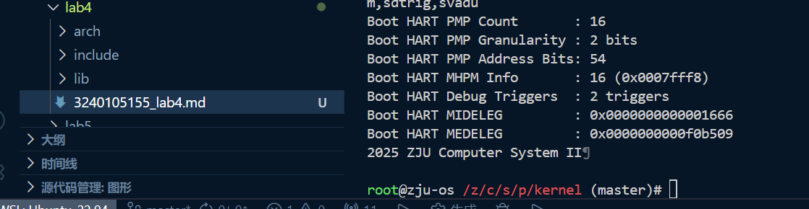
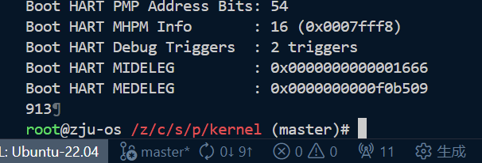

这个实验要求我们学习makefile和RISC-V汇编的编写，通过编写一个简单的引导程序来启动内核。
除此之外，我们还需要掌握使用Docker容器来搭建实验环境的技能。
问题 1：编写完makefile后，执行make命令时，报错*** missing separator. Stop.
解决方案：在makefile中，命令行前面必须使用Tab键进行缩进，而不是空格键。将报错位置的缩进改为Tab就可以解决问题。
问题 2：执行make时报错Error: illegal operands addi sp,sp,4096'
解决方案：RISC-V指令addi的立即数范围是-2048到2047，而4096超出了这个范围。需要使用两条指令来实现栈指针的调整：
li t0, 4096 # 将4096加载到临时寄存器t0中
add sp, sp, t0 # 将t0的值加到sp上
这样就避免了立即数范围的问题。
问题 3：完成所有文件的编写后，执行make命令时，报错找不到头文件sbi.h和print.h。
解决方案：
我以为上层的makefile会处理include路径的问题，所以在编写子目录的makefile时没有添加头文件搜索路径。
在makefile中添加头文件搜索路径，CPPFLAGS := -I../include -I../../../include，这样编译器就能找到头文件了。
最终执行make run，成功启动了内核，并在控制台输出了预期的信息：

根据顶层的Makefile文件中的规则：
$(LD) -T arch/riscv/kernel/vmlinux.lds arch/riscv/kernel/*.o lib/*.o -o vmlinux
可以看出，vmlinux是由arch/riscv/kernel/*.o和lib/*.o文件链接而成的。这些.o文件是通过编译arch/riscv/kernel目录下的源文件和lib目录下的源文件生成的。
包括arch/riscv/kernel目录下的head.S、main.c、print.c、sbi.c和lib目录下的div.S、muldi3.S。vmlinux.lds作为链接器脚本，定义了最终可执行文件的内存布局。
Makefile中的规则：
$(OBJDUMP) -S vmlinux > vmlinux.asm
将vmlinux反汇编成了vmlinux.asm文件。通过查看vmlinux.asm，可以发现以下要点：
uint64_t len = 0; <--- C代码
80200080: 00000613 li a2,0 <--- 对应的汇编代码
head.S中: call start_kernel # 调用 start_kernel 函数 <--- 伪指令(call)
80200010: 038000ef jal 80200048 <start_kernel> <--- 实际的机器指令
puts函数在调用sbi_ecall时，参数是如何传递到寄存器中的： // Call SBI ecall to write string
sbi_ecall(0x4442434e, 0, len, (uint64_t)s, 0, 0, 0, 0); <--- C代码
80200098: 00000893 li a7,0 <--- 参数传递到寄存器a7
8020009c: 00000813 li a6,0
802000a0: 00000713 li a4,0
802000a4: 00000593 li a1,0
802000a8: 44424537 lui a0,0x44424
802000ac: 34e50513 addi a0,a0,846 # 4442434e <_skernel-0x3bddbcb2>
802000b0: 104000ef jal 802001b4 <sbi_ecall> <--- 传递参数后调用函数
puts函数： 80200074: ff010113 addi sp,sp,-16 <--- 建立栈帧
80200078: 00113423 sd ra,8(sp) <--- 保存返回地址
...
802000b4: 00813083 ld ra,8(sp) <--- 恢复返回地址
预处理：处理源代码中的预处理指令，如#include和#define，生成纯C代码。
编译：将预处理后的C代码编译成汇编代码。
汇编：将汇编代码转换为机器码，生成目标文件（.o文件）。
链接：将多个目标文件和库文件链接在一起，生成最终的可执行文件（vmlinux）。
System.map 查看 vmlinux.lds 中自定义符号的值，比较它们的地址是否符合你的预期。 查看System.map文件可以发现，_skernel的值为0x80200000，符合vmlinux.lds中定义的内核起始地址BASE_ADDR = 0x80200000;。此外，_etext、_edata和_ebss的地址依次递增，分别对应.text、.data和.bss段的结束地址，符合预期。
在head.S开头插入指令csrr a0, mstatus，调试时发现程序卡死，这是因为OpenSBI启动后会将CPU切换到S-mode，而csrr指令只能在M-mode下执行，导致非法指令异常。通过这种方式可以确认内核启动时的特权态为S-mode。
通过查看mstatus和sstatus寄存器的值也可以确定：
(gdb) p/x $mstatus
$1 = 0x8000000a00006900
(gdb) p/x $sstatus
$2 = 0x8000000200006100
sstatus的SSP位（二进制展开后第8位）为1，表示程序在执行第一条指令前的特权态为S-mode。SIE位为0，表示中断在此时是关闭的状态。
.text、.data、.bss 段的内容是怎样的？ .text段：使用命令x/10i _stext得到输出：(gdb) x/10i _stext
0x80200000 <_stext>: csrr a0,mstatus
0x80200004 <_stext+4>: auipc sp,0x2
0x80200008 <_stext+8>: ld sp,4(sp)
0x8020000c <_stext+12>: lui t0,0x1
0x80200010 <_stext+16>: add sp,sp,t0
0x80200014 <_stext+20>: jal 0x8020004c <start_kernel>
0x80200018 <hang>: j 0x80200018 <hang>
0x8020001c <ecall_test>: addi sp,sp,-16
0x80200020 <ecall_test+4>: sd ra,8(sp)
0x80200024 <ecall_test+8>: li a7,0
可以看到.text段中存放的是程序的指令代码。
.data段：使用命令x/10x &_sdata得到输出：(gdb) x/10gx &_sdata
0x80202000: 0x0000000000000000 0x0000000080203000
0x80202010: 0xffffffffffffffff 0x0000000000000000
0x80202020: 0x0000000000000000 0x0000000000000000
0x80202030: 0x0000000000000000 0x0000000000000000
0x80202040: 0x0000000000000000 0x0000000000000000
可以看到.data段中存放的是已初始化的全局变量和静态变量。
.bss段：使用命令x/10gx &_sbss得到输出：(gdb) x/10gx &_sbss
0x80203000: 0x0000000000000000 0x0000000000000000
0x80203010: 0x0000000000000000 0x0000000000000000
0x80203020: 0x0000000000000000 0x0000000000000000
0x80203030: 0x0000000000000000 0x0000000000000000
0x80203040: 0x0000000000000000 0x0000000000000000
可以看到.bss段中的数据全为0，这是因为BSS段在程序运行前会被清零，用于存放未初始化的全局变量。
vmlinux.asm 中 sbi_ecall 编译得到的汇编代码。这段代码是如何实现正确地将参数 arg[0-5] 放置在寄存器 a[0-5] 中的？ 首先将函数传入的参数存放在临时寄存器中：
802001c0: 00050e13 mv t3,a0
802001c4: 00058313 mv t1,a1
802001c8: 00060e93 mv t4,a2
802001cc: 00068f13 mv t5,a3
802001d0: 00070f93 mv t6,a4
802001d4: 00078293 mv t0,a5
802001d8: 00080393 mv t2,a6
然后将临时寄存器中的值按照SBI的规范放置到对应的a寄存器中：
802001dc: 00088413 mv s0,a7
802001e0: 000e0893 mv a7,t3 # t3中存放着arg0(eid)
802001e4: 00030813 mv a6,t1 # t1中存放着arg1(fid)
802001e8: 000e8513 mv a0,t4
802001ec: 000f0593 mv a1,t5
802001f0: 000f8613 mv a2,t6
802001f4: 00028693 mv a3,t0
802001f8: 00038713 mv a4,t2
802001fc: 00040793 mv a5,s0
这样可以避免C函数参数寄存器与SBI调用约定之间的冲突，确保参数正确传递。
start_kernel 传递参数。 将main.c中的start_kernel函数修改为接受一个整数参数：
void start_kernel(int arg) {
puti(arg);
ecall_test();
}
然后在head.S中调用start_kernel时传递参数：
li a0, 913 # 传递参数 arg = 913用于测试思考题8
call start_kernel # 调用 start_kernel 函数
重新编译并运行内核，观察输出：

有宿主环境指的是程序运行在操作系统之上，比如我们在linux和windows下运行的普通C程序，这些程序可以使用标准库函数如printf、malloc等。
自立环境指的是程序直接运行在硬件上，没有操作系统的支持，比如嵌入式系统和操作系统内核，这些程序通常不能使用标准库函数。
我们的内核运行在自立环境下，因为它直接运行在硬件上，没有操作系统的支持。此外Makefile中指定了-ffreestanding选项，表明编译器生成的代码不依赖于宿主环境。
/和% Makefile中指定了ISA := rv64ia_zicsr_zifencei，没有包含M扩展，因此编译器不会直接生成/和%操作对应的idiv和irem指令，而是将这些操作转换为调用库函数（如_divdi3）来实现整数除法和取模。
此外，LDFLAGS := -lgcc...告诉链接器链接GCC的内置库，这些库中包含了实现除法和取模的函数。
在反汇编文件vmlinux.asm的末尾也可以看见这些库函数：
000000008020026c <__divdi3>:
#endif
FUNC_BEGIN (__divdi3)
bltz a0, .L10
8020026c: 06054063 bltz a0,802002cc <__umoddi3+0x10>
bltz a1, .L11
80200270: 0605c663 bltz a1,802002dc <__umoddi3+0x20>
软件实验确实比前几个硬件实验简单一些。这个实验让我更好的理解了操作系统引导过程中的细节，比如栈的初始化和跳转到内核入口点的过程。
通过编写makefile，我也学会了如何组织和管理多个源文件的编译过程。